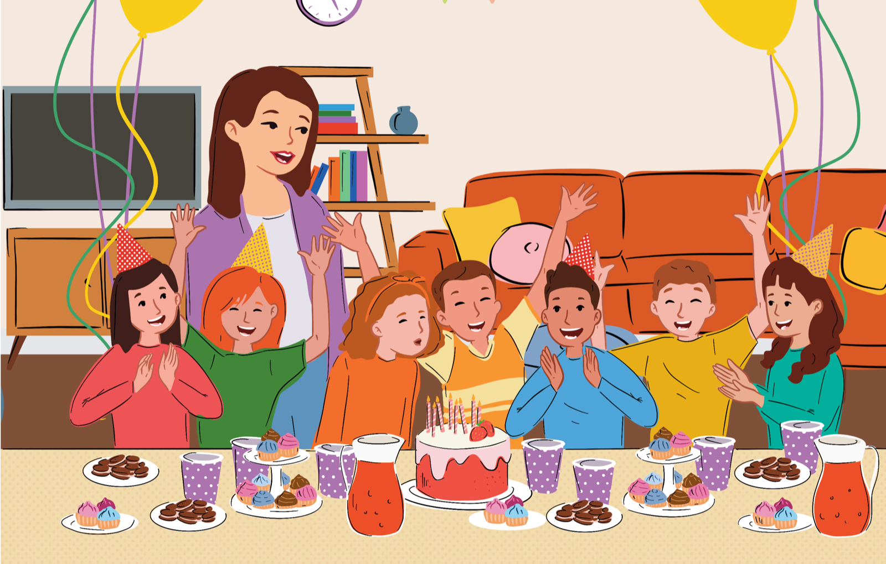

Traditat dhe trashëgimia jonë
Kulturat janë të shumëllojshme
Situata 1.
Andrra i ftoi të gjithë shokët e shoqet për ditëlindje. Jonit, që i pëlqente të ilustronte çdo ngjarje, po i bënte përshtypje fakti që në shtëpinë e Andrrës kishte shumë piktura në mur e shumë libra në bibliotekë. Jonin po e mrekullonte fakti që në çdo pikturë burrat mbanin plis në kokë e gratë kishin veshje plot ngjyra. Veshjet e tyre ishin të ndryshme nga veshjet e sotme. Pikturat tregonin historinë e popullit tonë e librat mbanin emra të autorëve të mëdhenj shqiptarë, si: vëllezërit Frashëri, Gjergj Fishta, Asdreni, Ismail Kadare etj. Aty kishte edhe fotografi të Motrës Tone dhe të motrave Qiriazi.
Kur prindërit e Andrrës erdhën për t’i përshëndetur fëmijët, Joni e pyeti mamanë e Andrrës: - A mund të huazoj një nga këta libra që ta lexoj gjatë pushimit të verës?
Zonjës iu bë qejfi, buzëqeshi lehtë e i tha se këta libra ishin për të rriturit. Ajo i premtoi që kur të rritej, do t’ia huazonte të gjithë librat, sepse vetëm kështu do të mund të shikonte se çfarë shkrimesh me vlerë kanë shkruar këta shkrimtarë.
Joni, i mrekulluar, e pyeti: - A janë të gjithë shqiptarë?
- Po, - tha zonja, - mirëpo për të njohur se sa e bukur është bota dhe sa shumë kultura të ndryshme ekzistojnë, ne duhet t’i lexojmë edhe autorët e huaj.
Joni u pajtua me këtë mendim dhe iu bashkua shokëve.
